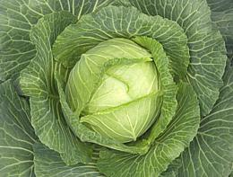

Vegetarian
There is no reasonable question that one can live and be healthy
on a vegetarian diet. A major part of the worlds population has lived
as vegetarians for generations, either by choice or because they couldn't
afford to do otherwise. Despite what some idealists claim, though,
vegetarianism is a recent post-agricultural development - our more
distant ancestors ate any animal, grub or worm they could get hold of.
Photo ©i0120
.
Classes and Types of
Vegetarians
There are two broad classes of vegetarians:
Ethical Vegetarians:
These are people who feel, or
who's religion teaches, that killing animals is cruel and wrong.
Some sects go a mile farther and forbid any exploitation or even
inconveniencing of animals, for any purpose whatever. Many of the
more extreme ethical vegetarians do not extend these courtesies to
people, even though people are animals too.Health / Aesthetic Vegetarians:
These are people
who are vegetarians for reasons other than ethics.
Now lets cut this a different way into types:
Strict Vegetarians:
These are folks who don't eat
any animal derived foods. The strictist of the strict are the vegans
who consider use of any animal products whatever, for any purpose,
highly unethical. See our separate
Vegan Diet page for more on that.
Fruitarians:
These are another variety of very
strict vegetarians, with a number of subclasses depending on
exact diet. The most extreme will only eat fruit that has fallen,
or would soon fall, from the plant. Others use the botanical
definition of "fruit" and eat beans, peas and the like. Most do
not eat grains. Frutarians may or may not be "ethical vegetarians".
Lacto Vegetarians
most exemplified by the Jains of India.
To the Jains even no-see-ems are "five sensed life" and not to be
harmed in any way. In times past Jains wore face masks to prevent
injuring tiny insects. Eggs, even sterile eggs, are regarded as
forbidden life forms, but milk products are permitted. This leaves
a huge hole in their philosophy (see next section) which perhaps c
ould be avoided in the India of times long past, but not now. For
this reason, many Jains have been turning to Strict Vegetarianism.
Ovo-Lacto Vegetarians
feel it is acceptable to eat eggs and
milk products because the animals producing them are not killed
or injured (they may be inconvenienced - but so are the rest of
us). It is not possible to be both an "Ethical Vegetarian" and an
"Ovo-Lacto Vegetarian". Anyone who doesn't understand why should
read our Veal -
Controversy page. False Vegetarians
eat fish, sometimes describing fish as
"fruits of the sea". Fish are not fruits or vegetables. We, and all
other higher animals are descended from fish. All of our
characteristics are exaggerations and adaptations of characteristics
we inherited from our fishy ancestors. We are of the same flesh, and
no-one who eats fish has the right to claim the title "vegetarian".
Episcatarian, perhaps?
Health Considerations
Information in this article is based on many publicly available
sources. Please refer to our
Medical Disclaimer
Today the vegetarian diet and protein requirements are much better
understood and a whole lot less scary than when I started my vegetarian
phase, but even back then I had no health problems from it. Of course
I wasn't a vegan, and I solved the social problems by simply adhering
to Theravada Buddhist conventions, allowing me to eat whatever I was
served (provided it wasn't prepared specifically for me) outside of home.
Records show that people who opt for a vegetarian diet hold to it an
average of about 8 years - I probably did a little less than that.
Here in California there are now so many ovo-lacto vegetarians
people are used to them and the social problems are much reduced from
what they once were. Of course, vegans are still considered pretty
insufferable by most folks.
Protein:
When I started my vegetarian phase the
protein thing was scary. It looked very difficult to assure the U.S.
recommended minimum. Turned out this "minimum" was so high it was
dangerous (encouraged by the meat and dairy industries) and was soon
reduced. It's probably still well above any real minimum.
The only real protein deficiency problem normal vegetarians face is
with a severely unbalanced protein supply. Vegetable sources are
incomplete (soy is one of the most complete but it apparently has other
serious problems). Fortunately beans and grains nicely complement each
other's deficiencies.
Earlier books on vegetarian nutrition say you had to balance your
protein at each meal, but current thinking is that you have at least
24 hours and probably a lot longer to balance out. The "protein
combining" theory was popularized by the first edition of Frances
Moore Lappé's book Diet for a Small Planet, but has
never been supported by properly interpreted data, and was withdrawn
from later editions.
Vegans:
Of all the classes and types of vegetarians
who are actually getting enough food, only strict vegetarians
and vegans (and the frutarian subset and vegetarian raw foodists) face
serious deficiency problems, particularlly with vitamin B12. For details
read our Vegan Diet page.
Fruitarians:
Persons on this extreme version of the
vegan diet are just as at risk from vitamin B12 deficiency as regular
Vegans. The fruitarian diet is considered quite risky for teens, and
has proven it can be deadly for infants. Some adults seem to get along
OK though.
Unfortunately long term risk data is very sparce. One notable
occurance was Apple co-founder Steve Jobs, who spent a lot of time on a
fruitarian diet. It is known that the fruitarian diet can seriously
disrupt pancreatic function, which can put people in the hospital. This
happened to Ashton Kutcher, who used the diet while preparing to play
Steve Jobs in the film JOBS. It is suspected, but not yet proven,
that this stress can result in a particular rare variety of pancreatic
cancer, the kind that Steve Jobs died of.
veg 071204 r 130529 - www.clovegarden.com
©Andrew Grygus - agryg@clovegarden.com - Photos
on this page not otherwise credited © cg1
- Linking to and non-commercial use of this page permitted